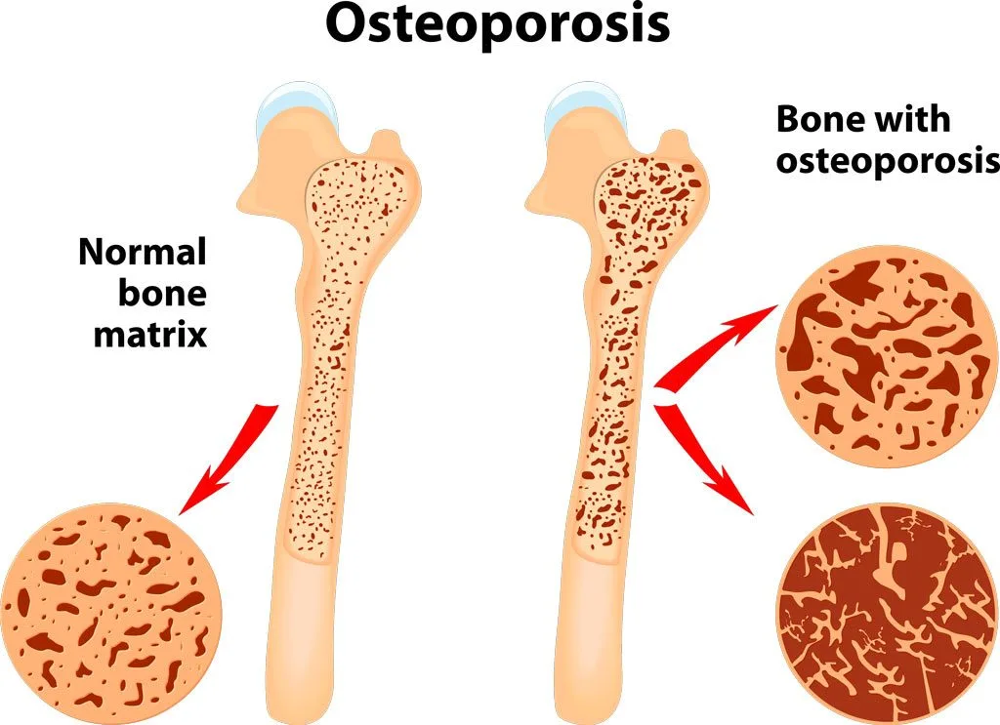
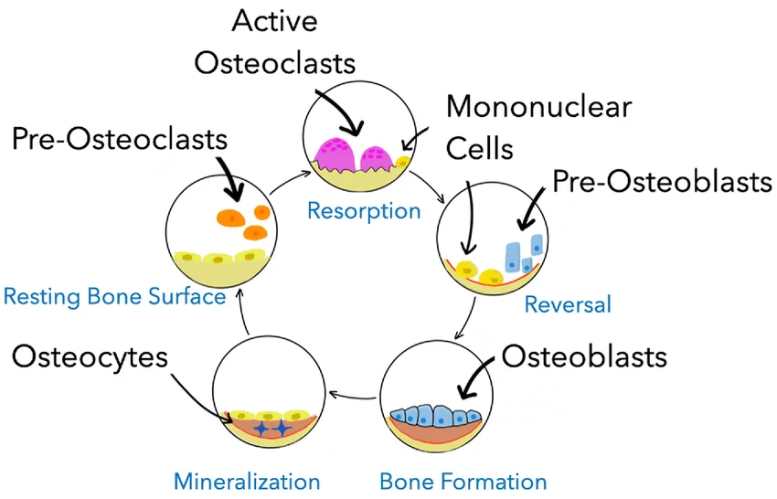
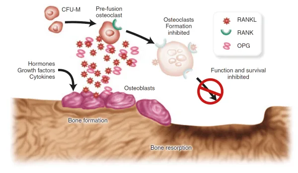
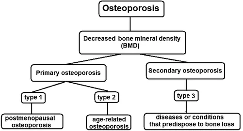
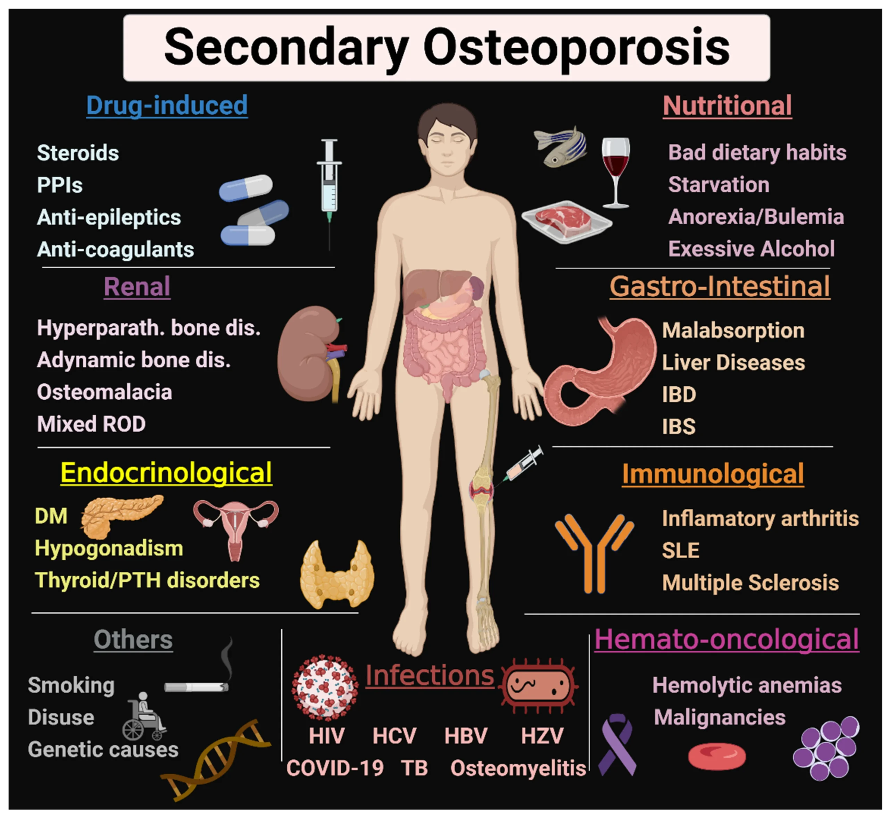
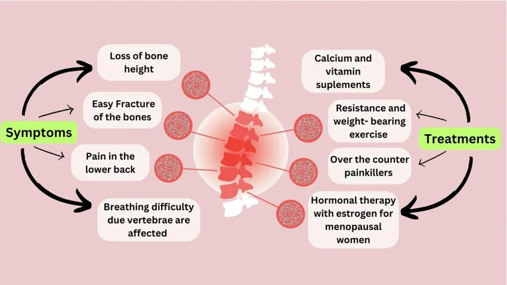

Expanded Nursing Uganda Explanation
Osteoporosis should be understood beyond a short definition. Link the concept to patient history, focused assessment, common risks, nursing priorities, documentation and evaluation of outcomes.
01 Overview
Osteoporosis is a systemic skeletal disease characterized by low bone mass and microarchitectural deterioration of bone tissue, leading to increased bone fragility and susceptibility to fracture.
Osteoporosis is a musculoskeletal disorder in which bones deteriorate or become brittle and fragile due to low bone mass as a result of bone tissue loss.
Osteoporosis occurs as a result of an imbalance between bone resorption and bone formation. Major contributing factors in the development of osteoporosis include estrogen deficiency and aging.
The word "osteoporosis" literally means "porous bone." It's often referred to as a "silent disease" because bone loss occurs without symptoms until the first fracture occurs, often in the hip, spine, or wrist.
- Systemic Skeletal Disease: Affects the entire skeleton, not just isolated areas.
- Low Bone Mass: A reduction in the total amount of bone tissue.
- Microarchitectural Deterioration: The internal structure of the bone (the trabecular network and cortical bone) becomes compromised, losing its strength and integrity.
- Increased Bone Fragility: The bone becomes weaker and less resilient to mechanical stress.
- Susceptibility to Fracture: Even minor trauma or stress that would not normally cause a fracture can lead to one. These are often referred to as fragility fractures or low-trauma fractures .
Bone is not a static tissue; it is dynamic and constantly undergoes a process called bone remodeling throughout life. This process involves a delicate balance between bone resorption (breakdown of old bone) and bone formation (creation of new bone).
The bone remodeling unit (BMU) consists of a group of cells that work together to remove old bone and form new bone. This cycle typically takes 3-6 months.
- Resting Phase: The bone surface is covered by quiescent lining cells.
- Activation: Signals (e.g., mechanical stress, hormones, cytokines) activate osteoclast precursors.
- Resorption: Osteoclasts: These are large, multinucleated cells derived from monocytes/macrophages. They attach to the bone surface, create an acidic microenvironment, and secrete enzymes (e.g., cathepsin K) to dissolve the mineralized bone matrix.
- This process creates small cavities or "resorption lacunae" in the bone.
- This phase lasts approximately 2-4 weeks.
- Reversal: Osteoclasts undergo apoptosis (programmed cell death) or detach. Mononuclear cells prepare the resorbed surface for new bone formation.
- Formation: Osteoblasts: These cells are responsible for building new bone. They migrate to the resorbed site and lay down new bone matrix (osteoid), primarily composed of collagen, which then becomes mineralized with calcium and phosphate.
- This process gradually fills the resorption lacunae.
- This phase lasts approximately 4-6 months.
- Mineralization: The osteoid matrix becomes mineralized with hydroxyapatite crystals.
- Quiescence: The new bone surface is covered by lining cells, and the cycle awaits a new activation signal.
- Osteoclasts: Responsible for bone resorption (breakdown).
- Osteoblasts: Responsible for bone formation (building).
- Osteocytes: Mature bone cells embedded within the bone matrix, derived from osteoblasts. They play a crucial role in sensing mechanical stress and orchestrating bone remodeling by communicating with osteoblasts and osteoclasts.
An interplay of systemic hormones and local factors controls the bone remodeling process:
- Parathyroid Hormone (PTH): Primarily involved in calcium homeostasis. Chronically elevated PTH (e.g., in hyperparathyroidism) promotes bone resorption. Intermittent PTH administration (e.g., teriparatide) can stimulate bone formation.
- Calcitonin: Produced by the thyroid gland, it inhibits osteoclast activity and thus reduces bone resorption. Less significant in humans than in other species.
- Vitamin D: Essential for calcium absorption in the gut and proper mineralization of bone. Deficiency leads to impaired bone formation (rickets in children, osteomalacia in adults).
- Estrogen: Crucial for maintaining bone density in both sexes, but especially in women. Estrogen inhibits osteoclast activity and promotes osteoblast activity. Postmenopausal Osteoporosis: The sharp decline in estrogen levels after menopause is a primary cause of accelerated bone loss in women. This leads to increased osteoclast activity, prolonged lifespan of osteoclasts, and reduced lifespan of osteoblasts, resulting in an imbalance where resorption outpaces formation.
- Androgens (e.g., Testosterone): Contribute to bone density in men, largely through conversion to estrogen.
- Growth Hormone and Insulin-like Growth Factor-1 (IGF-1): Stimulate bone formation.
- Thyroid Hormones: Excess thyroid hormone (hyperthyroidism) can increase bone turnover and lead to bone loss.
- Glucocorticoids (e.g., Prednisone): High doses and prolonged use suppress osteoblast activity, promote osteoblast and osteocyte apoptosis, increase osteoclast differentiation, and interfere with calcium absorption, leading to significant bone loss ( glucocorticoid-induced osteoporosis ).
- RANK/RANKL/OPG System: This is a critical local signaling pathway: RANKL (Receptor Activator of Nuclear factor Kappa-B Ligand): Produced by osteoblasts and stromal cells. It binds to RANK receptors on pre-osteoclasts, stimulating their differentiation, activation, and survival, thus promoting bone resorption.
- RANK (Receptor Activator of Nuclear factor Kappa-B): A receptor found on the surface of osteoclasts and their precursors.
- OPG (Osteoprotegerin): A soluble "decoy receptor" also produced by osteoblasts. OPG binds to RANKL, preventing RANKL from binding to RANK. This effectively inhibits osteoclast formation and activity, thereby protecting bone.
- Imbalance in Osteoporosis: In osteoporosis, there is often an imbalance in this system, with increased RANKL expression and/or decreased OPG production, leading to excessive osteoclast activity and bone resorption.
Osteoporosis develops when the delicate balance of bone remodeling is disrupted, specifically when bone resorption outpaces bone formation . This leads to:
- Reduced Bone Mineral Density (BMD): The total amount of mineralized bone decreases.
- Microarchitectural Deterioration: Trabecular Bone: In cancellous (spongy) bone, trabeculae become thinner, lose their interconnections, and some may completely disappear, reducing the overall structural integrity and load-bearing capacity. This is particularly evident in the vertebrae and the ends of long bones.
- Cortical Bone: In cortical (compact) bone, porosity increases, and the cortex thins, making it more brittle.
- Increased Bone Fragility: The combination of reduced bone mass and weakened internal structure makes the bone much more susceptible to fracture from minimal trauma.
This refers to osteoporosis that is not caused by an underlying disease or medication. It's the most common form.
- Postmenopausal Osteoporosis (Type 1): Cause: Primarily due to the abrupt decline in estrogen production after menopause in women.
- Mechanism: Estrogen deficiency leads to accelerated bone resorption (increased osteoclast activity) that outpaces bone formation, particularly affecting trabecular bone.
- Clinical Features: Typically affects women aged 50-70. Often associated with vertebral and distal forearm (wrist) fractures.
- Senile Osteoporosis (Type 2): Cause: Age-related bone loss in both men and women over approximately 70-75 years.
- Mechanism: A combination of factors, including: Decreased osteoblast function and reduced bone formation.
- Reduced vitamin D synthesis in the skin and impaired intestinal calcium absorption.
- Increased PTH levels (secondary hyperparathyroidism) due to chronic renal calcium loss and vitamin D deficiency.
- Overall slower but continuous loss of both cortical and trabecular bone.
- Clinical Features: Associated with hip, vertebral, and other fractures.
This type of osteoporosis results from specific identifiable medical conditions, diseases, or medications that interfere with normal bone metabolism. Examples include:
- Endocrine disorders: e.g., hyperthyroidism, hyperparathyroidism, Cushing's syndrome, hypogonadism.
- Gastrointestinal disorders: e.g., malabsorption syndromes, inflammatory bowel disease, gastric bypass.
- Renal disease.
- Rheumatic diseases: e.g., rheumatoid arthritis.
- Medications: e.g., long-term glucocorticoids, anticonvulsants, heparin, GnRH agonists, some cancer treatments.
- Lifestyle factors: e.g., chronic alcohol abuse, prolonged immobilization.
These factors can be broadly categorized into non-modifiable (cannot be changed) and modifiable (can be changed or managed).
- Age: The most significant non-modifiable risk factor. Bone density naturally declines with age after peak bone mass is achieved (typically in the late 20s to early 30s). The older a person gets, the higher their risk.
- Gender: Women are at a much higher risk than men. Menopause: The rapid decline in estrogen levels after menopause leads to accelerated bone loss.
- Smaller, Thinner Bones: Women generally have smaller and lighter bones than men, meaning they start with less bone mass.
- Longer Lifespan: Women generally live longer, increasing their exposure to age-related bone loss.
- Race/Ethnicity: Caucasian and Asian individuals, particularly women, have the highest risk.
- African American and Hispanic individuals have a lower, but still significant, risk.
- Family History/Genetics: A parent or sibling with osteoporosis, especially a parent who had a hip fracture, significantly increases an individual's risk. Genetic factors influence bone size, peak bone mass, and bone turnover rates.
- Previous Fracture: Having had one fragility fracture (e.g., hip, spine, wrist) dramatically increases the risk of future fractures.
- Personal History of Fractures as an Adult: Fractures occurring with minimal trauma after age 50 are a strong indicator of underlying bone fragility.
- Low Calcium Intake: Insufficient dietary calcium over a lifetime can contribute to low bone density. Calcium is the primary building block of bone.
- Vitamin D Deficiency: Vitamin D is essential for the absorption of calcium in the gut and its incorporation into bone. Deficiency leads to impaired bone mineralization.
- Sedentary Lifestyle/Lack of Weight-Bearing Exercise: Mechanical stress on bones through activities like walking, jogging, and weightlifting stimulates osteoblasts and helps maintain bone density. Prolonged inactivity leads to bone loss.
- Smoking (Active and Passive): Tobacco use is detrimental to bone health. It directly inhibits osteoblasts, increases osteoclast activity, reduces estrogen levels, and impairs calcium absorption.
- Excessive Alcohol Consumption: Chronic heavy alcohol intake (typically >3 units/day) is associated with reduced bone formation, impaired calcium and vitamin D metabolism, nutritional deficiencies, and increased risk of falls.
- Low Body Mass Index (BMI) / Being Underweight: Thin individuals (BMI < 18.5 kg/m²) have a higher risk, partly due to lower bone mass and possibly lower estrogen levels in women.
- Unhealthy Diet: A diet lacking in essential nutrients, not just calcium and vitamin D, can negatively impact bone health.
- Excessive Caffeine Intake: Some studies suggest very high caffeine intake might slightly increase urinary calcium excretion, but its overall impact is generally considered minor compared to other risk factors.
- Eating Disorders (e.g., Anorexia Nervosa): Lead to severe malnutrition, hormonal imbalances (low estrogen/testosterone), and amenorrhea in women, all of which critically impair bone formation and accelerate bone loss.
The most significant and often the first clinical manifestation of osteoporosis is a fragility fracture . These are fractures that occur from a fall from a standing height or less, or with minimal or no trauma.
- In the early stages, there are usually no overt signs or symptoms.
- Bone density can decrease significantly without the individual being aware of the ongoing bone loss.
- Pain is not typically associated with the bone loss itself, but rather with the consequences of fractures.
Fractures are the primary clinical consequence of osteoporosis and cause significant morbidity and mortality. The most common sites for fragility fractures are:
- Mechanism: Often occur spontaneously or with minimal trauma (e.g., bending, lifting, coughing, sneezing). The weakened vertebral body collapses.
- Symptoms: Acute Pain: Can range from mild to severe, typically located in the mid-thoracic or lumbar spine. Pain may radiate to the abdomen. It often worsens with movement, standing, or sitting, and may be relieved by lying down.
- Chronic Pain: Persistent dull ache even after the acute fracture pain subsides.
- Loss of Height: Progressive collapse of multiple vertebrae leads to a gradual reduction in standing height.
- Kyphosis ("Dowager's Hump"): Forward curvature of the spine (thoracic kyphosis) due to wedging or collapse of anterior vertebral bodies. This can cause discomfort, altered posture, and reduced lung capacity in severe cases.
- Protuberant Abdomen: As the spine shortens and curves forward, the abdomen may protrude.
- Breathing Difficulties: Severe kyphosis can compress the lungs and reduce lung volume.
- Gastrointestinal Issues: Abdominal pain and early satiety may occur due to changes in abdominal cavity space.
- Silent Fractures: A significant percentage of vertebral fractures (up to two-thirds) can be asymptomatic or cause only mild, non-specific back pain that is not attributed to a fracture. These "silent" fractures are still significant as they increase the risk of future fractures.
- Mechanism: Usually result from a fall, often sideways onto the hip.
- Symptoms: Severe Pain: Intense pain in the hip or groin area.
- Inability to Bear Weight: Patient cannot stand or walk after the fall.
- Shortening and External Rotation of the Affected Leg: Classic signs.
- Consequences: Hip fractures are the most devastating type of osteoporotic fracture. High mortality rate (15-30% within one year, often due to complications).
- Significant morbidity: Many survivors experience permanent disability, requiring long-term care or loss of independence.
- Increased risk of subsequent fractures.
- Mechanism: Typically occur from a fall onto an outstretched hand (FOOSH injury). Common in postmenopausal women.
- Symptoms: Acute pain, swelling, and deformity in the wrist.
- Consequences: Often require surgical repair or casting. While less life-threatening than hip fractures, they can cause significant pain, functional limitation, and long-term disability, especially in dominant hand.
- Other common sites include the pelvis, humerus (upper arm), and ribs. These also typically occur with low-trauma events.
- Chronic Back Pain: Even without an acute fracture, the cumulative effect of microfractures or subtle vertebral changes can lead to persistent back discomfort.
- Impaired Mobility and Functional Limitations: Fractures, especially hip and vertebral, significantly limit a person's ability to move independently, affecting daily activities, work, and social participation.
- Loss of Independence: The need for assistance with activities of daily living (ADLs) can lead to a reduced quality of life.
- Psychological Impact: Fear of Falling: Patients often develop a significant fear of falling, which can lead to social isolation and reduced physical activity, further exacerbating bone loss and muscle weakness.
- Depression and Anxiety: Chronic pain, loss of independence, and altered body image can contribute to mood disorders.
- Reduced Self-Esteem: Changes in appearance (kyphosis, height loss) and functional limitations can impact self-perception.
- Respiratory Compromise: Severe kyphosis can restrict lung expansion, leading to shortness of breath and increased risk of respiratory infections.
- Gastrointestinal Distress: Changes in posture can lead to abdominal crowding, causing early satiety, constipation, and reflux symptoms.
The diagnosis of osteoporosis relies on a combination of patient history, physical examination, and objective measurements of bone mineral density (BMD). Laboratory tests are for identifying secondary causes of bone loss and ruling out other conditions.
- Patient History: Risk Factors: Thorough assessment of all non-modifiable and modifiable risk factors (as discussed in Objective 2).
- Fracture History: Inquire about previous fragility fractures (fractures occurring from a fall from standing height or less, or with minimal/no trauma). Note the location and age at which they occurred.
- Symptoms: Ask about back pain, height loss, changes in posture (kyphosis).
- Medication History: Long-term use of corticosteroids, anticonvulsants, PPIs, etc.
- Lifestyle: Diet (calcium, vitamin D intake), exercise, smoking, alcohol consumption.
- Menstrual History (for women): Age of menopause, history of amenorrhea.
- Physical Examination: Height Measurement: Accurate measurement is crucial. Document any historical height loss (>1.5 inches from peak height or >0.8 inches from most recent measurement).
- Spinal Assessment: Observe for kyphosis ("Dowager's hump"). Palpate the spine for tenderness.
- Functional Assessment: Observe gait, balance, and muscle strength, as these are related to fall risk.
- General Health Status: Assess for signs of underlying conditions that could cause secondary osteoporosis.
The gold standard for diagnosing osteoporosis and assessing fracture risk is the measurement of BMD, primarily using Dual-energy X-ray Absorptiometry (DXA or DEXA) .
- Dual-energy X-ray Absorptiometry (DXA Scan): What it measures: DXA uses low-dose X-rays to measure bone density at the most clinically relevant sites: the lumbar spine (L1-L4), femoral neck, and total hip. Forearm DXA may be used if hip and spine cannot be measured or are unreliable.
- Results Interpretation: DXA results are reported as T-scores and Z-scores. T-score: Compares the patient's BMD to the average BMD of a healthy young adult (30-year-old) of the same sex. Normal Bone Density: T-score ≥ -1.0 SD
- Osteopenia (Low Bone Mass): T-score between -1.0 and -2.5 SD
- Osteoporosis: T-score ≤ -2.5 SD
- Severe Osteoporosis: T-score ≤ -2.5 SD AND presence of one or more fragility fractures.
- Z-score: Compares the patient's BMD to the average BMD of an age-matched and sex-matched individual. A Z-score of -2.0 or lower is considered below the expected range for age and should prompt investigation for secondary causes of osteoporosis.
- Indications for DXA Screening (National Osteoporosis Foundation/International Society for Clinical Densitometry guidelines): All women age 65 and older.
- All men age 70 and older.
- Postmenopausal women and men aged 50-69 with risk factors.
- Adults who have had a fragility fracture.
- Adults with a disease or condition associated with low bone mass or bone loss.
- Adults taking medications associated with low bone mass or bone loss.
- Anyone being considered for pharmacological treatment for osteoporosis.
- Anyone being treated for osteoporosis, to monitor treatment effectiveness.
- Frequency: Typically every 1-2 years for monitoring, or as clinically indicated.
- Other Imaging Techniques (Less Common for Diagnosis of Osteoporosis): Quantitative Computed Tomography (QCT): Measures volumetric BMD and can assess trabecular bone separately. More expensive and involves higher radiation dose than DXA. Primarily used for research.
- Peripheral DXA (pDXA), Quantitative Ultrasound (QUS): Measure BMD at peripheral sites (e.g., wrist, heel). Useful for screening but not sufficient for definitive diagnosis or monitoring treatment due to lower precision and correlation with central sites. Not recommended for diagnosis.
- X-rays: Not used to diagnose osteoporosis directly as they only show significant bone loss (typically >30%) when structural changes are already advanced. However, X-rays are critical for diagnosing fractures . A vertebral fracture seen on a plain lateral spine X-ray can diagnose osteoporosis even if the T-score is above -2.5.
Laboratory tests are essential to rule out secondary causes of osteoporosis, identify underlying medical conditions, and assess for nutritional deficiencies. They are generally not used to diagnose osteoporosis itself but to inform management.
- Calcium Metabolism: Serum Calcium: Check for hypo/hypercalcemia (e.g., hyperparathyroidism, malabsorption).
- Serum Phosphorus: Can be altered in renal disease or parathyroid disorders.
- Serum 25-hydroxyvitamin D [25(OH)D]: Essential to assess vitamin D status. Deficiency is common and impairs calcium absorption.
- Parathyroid Hormone (PTH): High levels suggest primary or secondary hyperparathyroidism, which can cause bone loss.
- Renal Function: Serum Creatinine and Glomerular Filtration Rate (GFR): To assess kidney function, as chronic kidney disease impacts bone metabolism.
- Urinalysis: May reveal proteinuria or hematuria, suggesting renal disease.
- Thyroid Function: Thyroid-Stimulating Hormone (TSH): To rule out hyperthyroidism, which accelerates bone turnover.
- Complete Blood Count (CBC): May reveal anemia or other blood dyscrasias associated with certain bone-affecting conditions (e.g., multiple myeloma).
- Inflammatory Markers: Erythrocyte Sedimentation Rate (ESR), C-Reactive Protein (CRP): May be elevated in inflammatory conditions (e.g., rheumatoid arthritis) that can cause secondary osteoporosis.
- Other Tests (if indicated by history/physical): Celiac Disease Screening: Tissue transglutaminase IgA (tTG-IgA) if malabsorption is suspected.
- Sex Hormone Levels: Testosterone (in men), estrogen (in younger women with amenorrhea) if hypogonadism is suspected.
- 24-hour Urinary Calcium Excretion: To assess for hypercalciuria (excessive calcium loss in urine) or malabsorption.
- Bone Turnover Markers (BTMs): Bone Formation Markers: Procollagen Type I N-terminal Propeptide (P1NP), Bone-specific Alkaline Phosphatase (BSAP).
- Bone Resorption Markers: C-telopeptide (CTX), N-telopeptide (NTX).
- Use: Not used for diagnosis, but can help assess fracture risk, monitor response to therapy (especially antiresorptive agents), and gauge medication adherence. Levels can be quite variable and are often used in specialized clinics.
- What it is: An online algorithm developed by the World Health Organization (WHO) that estimates the 10-year probability of a major osteoporotic fracture (clinical spine, forearm, hip, or shoulder fracture) and hip fracture.
- Inputs: Uses a combination of clinical risk factors (age, sex, weight, height, previous fracture, parental history of hip fracture, current smoking, glucocorticoid use, rheumatoid arthritis, secondary osteoporosis, alcohol intake) and, if available, femoral neck BMD T-score.
- Use: FRAX is particularly useful for guiding treatment decisions in individuals with osteopenia, helping to identify those who may benefit from pharmacological therapy despite not meeting the DXA criteria for osteoporosis.
The primary goals are to prevent new fractures, reduce the risk of future fractures, maintain or increase bone mineral density (BMD), alleviate pain, and improve functional capacity and quality of life.
These strategies are recommended for all individuals, regardless of whether they are receiving pharmacological therapy.
- Dietary Modifications and Nutritional Support: Calcium Intake: Recommendation: 1000-1200 mg/day of elemental calcium from diet and/or supplements.
- Sources: Dairy products (milk, yogurt, cheese), fortified plant-based milks, leafy green vegetables (kale, broccoli), fortified cereals, calcium-set tofu.
- Supplementation: If dietary intake is insufficient, calcium supplements (e.g., calcium carbonate, calcium citrate) may be used. Advise taking calcium carbonate with food for better absorption and dividing doses if >500-600 mg at once.
- Vitamin D Intake: Recommendation: 800-1000 IU/day for most adults over 50. Some individuals may require higher doses, especially if deficient.
- Sources: Sunlight exposure (skin synthesis), fatty fish (salmon, tuna), fortified foods (milk, cereal), supplements (D2 or D3).
- Importance: Essential for calcium absorption and bone mineralization. Regular monitoring of 25(OH)D levels is important.
- Other Nutrients: Protein: Adequate protein intake is essential for bone matrix formation and muscle strength.
- Vitamin K, Magnesium, Zinc: Play supporting roles in bone health.
- Weight-Bearing and Muscle-Strengthening Exercise: Mechanism: Mechanical stress on bones stimulates osteoblasts and helps maintain/improve BMD.
- Types of Exercise: Weight-Bearing: Walking, jogging, stair climbing, dancing, hiking.
- Muscle-Strengthening: Weightlifting, resistance bands, bodyweight exercises (squats, push-ups).
- Balance Training: Tai Chi, yoga can reduce fall risk.
- Recommendations: 30-45 minutes of moderate-intensity weight-bearing exercise most days of the week, along with muscle-strengthening exercises 2-3 times per week.
- Caution: Avoid high-impact or twisting movements for individuals with severe osteoporosis or vertebral fractures due to increased fracture risk.
- Lifestyle Modifications: Smoking Cessation: Encouraged to improve bone health and overall well-being.
- Moderate Alcohol Intake: Limit alcohol to no more than 1 drink/day for women and 2 drinks/day for men.
- Maintain Healthy Body Weight: Avoid being underweight.
- Avoid Excessive Caffeine: Although minor, can be a contributing factor.
- Fall Prevention: Environmental Modifications: Remove tripping hazards (rugs, clutter), improve lighting, install grab bars in bathrooms, ensure stair railings.
- Vision Check: Regular eye exams and updating eyewear prescriptions.
- Medication Review: Assess for medications that cause dizziness, sedation, or orthostatic hypotension.
- Footwear: Wear supportive, low-heeled shoes with good traction.
- Assistive Devices: Canes or walkers if needed.
- Balance Training: Exercises to improve balance and coordination.
Pharmacological therapy is indicated for individuals with established osteoporosis (T-score ≤ -2.5), those with a fragility fracture, or individuals with osteopenia who have a high FRAX score indicating a significant 10-year fracture risk.
These drugs primarily work by inhibiting osteoclast activity, thus slowing bone loss.
- Bisphosphonates: (First-line therapy for most patients) Mechanism: Bind to hydroxyapatite crystals in bone, inhibiting osteoclast activity and inducing osteoclast apoptosis.
- Examples: Oral: Alendronate (Fosamax) 70mg weekly orally, Risedronate (Actonel)35mg weekly or 150mg monthly orally, Ibandronate (Boniva) 150mg monthly orally, or 3mg every 3 months through intravenous (IV) route.
- Intravenous: Zoledronic acid (Reclast, Zometa) 5mg annually through IV route..
- Administration: Oral bisphosphonates require specific administration (e.g., first thing in the morning, with a full glass of plain water, 30-60 minutes before food/other meds, remaining upright for 30-60 minutes) to ensure absorption and prevent esophageal irritation. IV zoledronic acid is given annually.
- Side Effects: Esophageal irritation (oral), GI upset, flu-like symptoms (IV), musculoskeletal pain. Rare but serious side effects: Osteonecrosis of the Jaw (ONJ) and atypical femur fractures (AFF).
- Duration: Often used for 3-5 years (oral) or 6 years (IV), followed by a "drug holiday" in low-risk patients, to mitigate rare side effects.
- Denosumab (Prolia): Mechanism: A monoclonal antibody that targets RANKL, preventing it from activating RANK on osteoclasts. This inhibits osteoclast formation, function, and survival, leading to a rapid and sustained reduction in bone resorption.
- Administration: Subcutaneous injection every 6 months.
- Side Effects: Musculoskeletal pain, dermatologic reactions, hypocalcemia (especially with renal impairment). Rare: ONJ and AFF.
- Note: Unlike bisphosphonates, there is no drug holiday. If discontinued, rapid bone loss can occur, requiring an alternative antiresorptive agent.
- Estrogen Agonist/Antagonist (SERM): Raloxifene (Evista): Mechanism: Acts as an estrogen agonist in bone (prevents bone loss) and an estrogen antagonist in breast and uterine tissue (does not stimulate these tissues).
- Indications: Primarily used for postmenopausal women with osteoporosis who also need breast cancer prevention, or cannot tolerate bisphosphonates.
- Side Effects: Hot flashes, leg cramps, increased risk of venous thromboembolism (VTE). Not for use in women with history of VTE.
- Calcitonin (Miacalcin): Mechanism: A hormone that directly inhibits osteoclast activity.
- Administration: Calcitonin directly inhibits osteoclasts thereby reducing bone loss and increasing bone mineral density. It is used for postmenopausal women with osteoporosis. The dosing is 100 units subcutaneous daily; or 200 units intranasal daily.
- Indications: Generally reserved for pain management associated with acute vertebral fractures or for patients who cannot tolerate other therapies. Less effective at increasing BMD compared to other agents.
- Side Effects: Rhinitis (nasal spray), nausea, flushing.
- Selective estrogen receptor modulators (SERMs). SERMs such as raloxifene which is a second line treatment, reduce the risk of osteoporosis by preserving bone mineral density without estrogenic effects on the uterus. The dosing is 60mg daily orally.
These drugs stimulate bone formation by activating osteoblasts. They are generally reserved for patients with severe osteoporosis or those who have failed antiresorptive therapy.
- Teriparatide (Forteo) and Abaloparatide (Tymlos): (PTH analogs) Mechanism: Recombinant human parathyroid hormone (PTH) fragments. When given intermittently (daily injections), they stimulate osteoblast activity, leading to new bone formation. Continuous high levels of PTH cause bone resorption.
- Administration: Daily subcutaneous injection for a limited duration (typically 18-24 months) due to potential risk of osteosarcoma (seen in rat studies).
- Indications: High-risk patients, severe osteoporosis, or those who have fractured while on antiresorptive therapy.
- Side Effects: Nausea, dizziness, leg cramps, orthostatic hypotension. After completion, patients typically transition to an antiresorptive agent to maintain the newly formed bone.
- Romosozumab (Evenity): Mechanism: A monoclonal antibody that inhibits sclerostin, a protein that suppresses bone formation. By blocking sclerostin, Romosozumab simultaneously increases bone formation and decreases bone resorption.
- Administration: Two subcutaneous injections once a month for 12 months.
- Indications: High-risk patients, severe osteoporosis.
- Side Effects: Joint pain, headache. Rare serious side effects: ONJ, AFF, and potential cardiovascular events (not recommended in patients with recent heart attack or stroke). After completion, patients typically transition to an antiresorptive agent.
- Vertebral Fractures: Pain management, physical therapy, bracing (short-term), kyphoplasty/vertebroplasty (for severe pain from acute fracture).
- Hip Fractures: Surgical repair is almost always required, followed by rehabilitation.
- Glucocorticoid-Induced Osteoporosis (GIOP): Prophylactic bisphosphonates or other agents may be initiated at the start of long-term glucocorticoid therapy, along with calcium and vitamin D.
Surgical intervention in osteoporosis is primarily focused on stabilizing fractures, restoring function, and alleviating pain. It's not a treatment for the underlying disease but for its most severe complication – fractures.
02 Nursing Uganda Clinical Lens
Use Osteoporosis as a practical nursing topic, not only a memorized definition. Connect structure, movement, pain, circulation, nerve function and safe mobility.
- What to understand first: define osteoporosis, identify the normal or expected pattern, then explain what changes when the patient is unwell.
- Why it matters in care: the nurse must recognize risk early, explain findings clearly, document accurately and know when to escalate.
- How to revise it: connect each point to assessment, nursing diagnosis or care problem, intervention, rationale and evaluation.
03 Assessment Guide
- Pain score, site, onset, deformity, swelling, bruising and ability to move.
- Distal pulse, capillary refill, colour, warmth, sensation and movement.
- Skin integrity, wounds, cast tightness, traction alignment and pressure areas.
04 Nursing Priorities, Rationales and Outcomes
- Immobilize and protect the affected part while preventing further injury.
- Control pain and swelling while monitoring neurovascular status.
- Prevent complications such as compartment syndrome, infection, pressure injury and venous stasis.
The rationale for these priorities is patient safety: nursing actions should prevent deterioration, reduce discomfort, support recovery and create clear evidence for the next caregiver.
- Expected outcome: Pain is reduced, circulation and sensation remain intact, swelling is controlled and the patient mobilizes safely within the care plan.
05 Patient Teaching and Revision Check
- Explain osteoporosis in simple language the patient or caregiver can repeat back.
- Teach warning signs, medicine or follow-up instructions, hygiene or lifestyle points where relevant.
- For exams, prepare a short answer using: definition, causes or risk factors, signs, assessment, management, complications and prevention.
- For ward practice, document baseline findings, actions taken, patient response and the plan for review.
Illustrations and Diagrams (7)






Related Video Lectures
Watch nursing lecture videos on YouTube for this topic. Opens in a new tab.
Watch on YouTubeExternal link: YouTube may use its own cookies and terms. Nursing Uganda is not affiliated with YouTube.